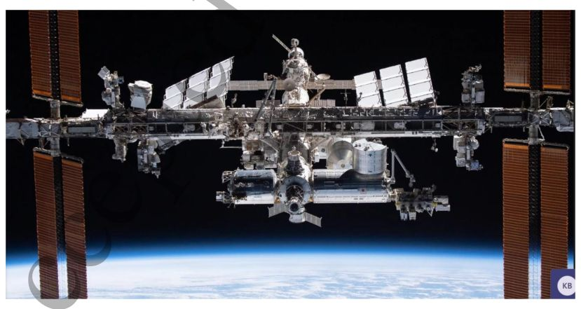
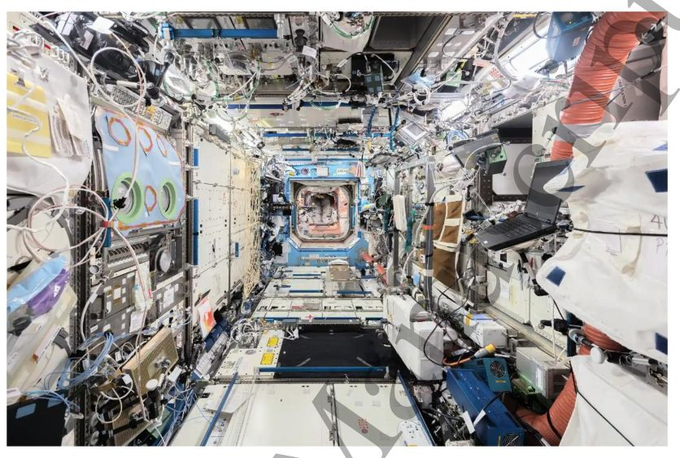

Roadmap on materials development and utilization in space
M.T. Mollah, B. Šeta, J. Spangenberg
Acta Astronautica, 2026
Abstract
Materials science underpins national economies and infrastructures worldwide, contributing significantly to the delivery of key services, as well as underpinning multiple industrial sectors, including space. The space sector, represents a cornerstone of technological progress, driving both direct and indirect innovation across many terrestrial fields. Taken together, materials science and the space sector represent a transformative frontier for innovation that remains only partially exploited, offering opportunities for scientific, economic, and societal advancement. In this context, this roadmap presents a special focus on where such interplay can yield fruitful outcomes over the next two decades, exploring specific intersections between these fields. The rationale behind this is routed in the current demand and forward view for specialised materials to address both terrestrial challenges and extraterrestrial ambitions, with the global space economy projected to reach $1.8 trillion by 2035, requiring a concerted focus on interdisciplinary collaboration. Microgravity provides a unique platform to achieve this, enabling critical insights, more precise control over material formation and the creation of advanced materials with enhanced properties for diverse applications. These breakthroughs are already informing terrestrial applications across industries, from semiconductors to pharmaceuticals, while laying the groundwork for advanced manufacturing in space. Emerging sectors such as the “In-Orbit Economy” and in-situ resource utilisation (ISRU) further underscore this critical opportunity, emphasising the need for resilient materials that can withstand the harsh conditions of space and utilise extraterrestrial resources sustainably.
Figures from this paper
{kind=link}

{kind=link}

Citation
@article{30_lappa_et_al_2026_j_phys_mater_roadmap_off,
title = {Roadmap on materials development and utilization in space},
author = {M.T. Mollah and B. Šeta and J. Spangenberg},
journal = {Acta Astronautica},
year = {2026},
doi = {10.1016/j.actaastro.2026.02.001},
url = {https://doi.org/10.1016/j.actaastro.2026.02.001}
}